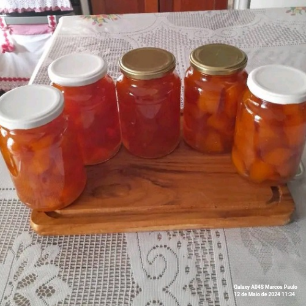
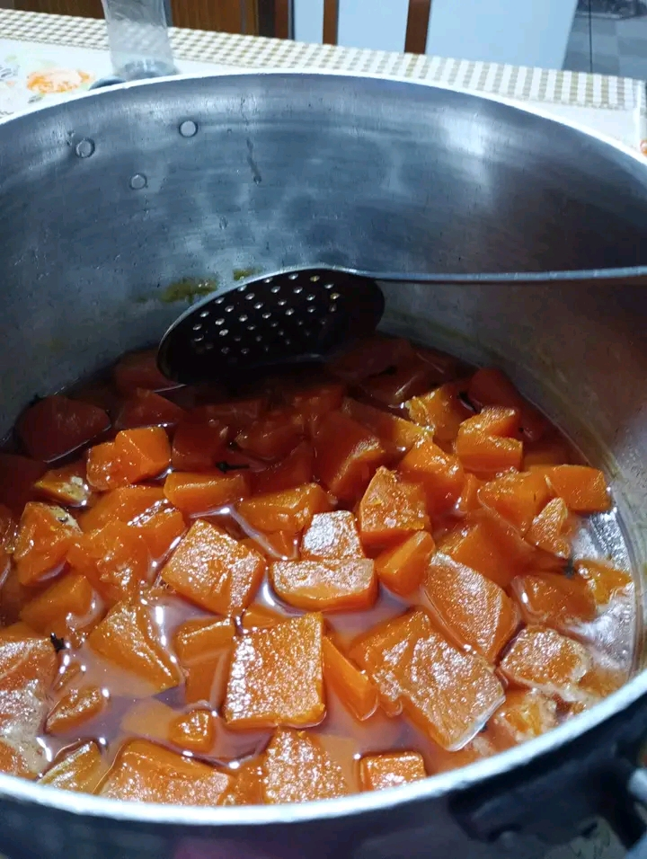
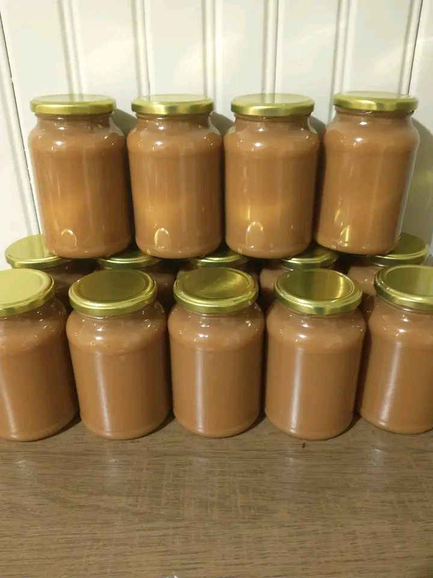
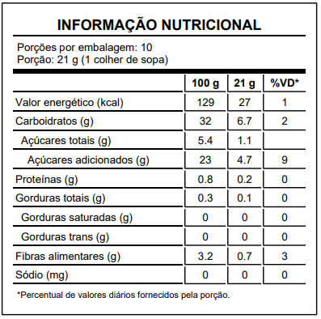

Geleias Artesanais 210g



R$ 10,00 por pote
Compre AgoraInformações da Geleia
Geleia artesanal feita com frutas frescas, sem adição de conservantes. Deliciosa e perfeita para acompanhar pães, bolos e sobremesas. Produzida com carinho para garantir o melhor sabor e qualidade.

Maria Silva
Maria Silva é uma produtora dedicada, especializada na fabricação de geleias artesanais. Trabalhando na Fazenda Sabor Natural, ela se empenha em produzir geleias de alta qualidade com frutas colhidas localmente.
Tabela Nutricional
Ingredientes
Frutas frescas, açúcar, e suco de limão. Sem adição de conservantes.